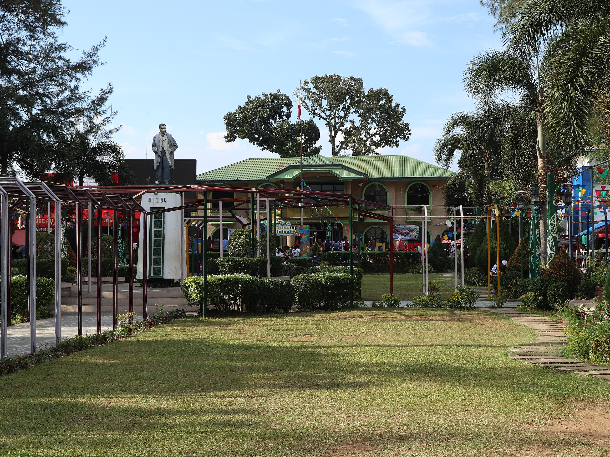

About Tubod

Tubod, officially the Municipality of Tubod, is a 2nd class municipality and capital of the province of Lanao del Norte, Philippines. According to the 2020 census, it has a population of 60,182 people.
Tubod derived its name from the spring located at Sitio Baybay in Barangay Poblacion. According to the old folks, even during the longest dry season, the spring will not drain. Tubod comes from the Cebuano language, meaning “the water source”. History pointed out that Christian immigrants from Luzon and Visayas settled in this part of the region.